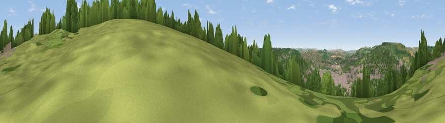

Viewpoint near Bath
#24476 in England · top 40% of its area beats it · near BathWhere it is
The exact computed spot (ST 76591 64861). Click the marker for map links.
The view, rendered

A 360° render of this exact spot computed from the terrain model, tree cover and land cover — summer colours, afternoon light, calibrated against photographs of famous viewpoints. Real trees, hedges and buildings will differ in detail.
The panorama
Grey silhouette: terrain skyline in each direction (720 bearings, Earth curvature and refraction included). Dashed green: skyline with trees (+15 m) and buildings (+8 m) as obstacles. Blue strip: how far the ground is visible on each bearing.
Where the view opens
Wedge length = distance to the farthest visible ground on that bearing (vegetation-aware). Rings at 10, 25 and 50 km.
What fills the view
52% woodland · 30% built-up · 17% grassland ·
Angular shares of the visible panorama (visual magnitude), not map area. Landscape diversity 0.46 (0–1 Shannon).
Key numbers
More beautiful places nearby
The staircase of upgrades: each row has a higher view potential than everything closer. Driving times are estimates from straight-line distance, calibrated against real road routing — check an actual route before setting out.
| Place | Direction | Drive | Score |
|---|---|---|---|
| Viewpoint near Bathampton | ENE · 1 km | ~3 min | 53.4 |
| Little Solsbury Hill | N · 3 km | ~7 min | 54.2 |
| Viewpoint near Bathford | ENE · 3 km | ~8 min | 62.4 |
| Viewpoint near Combe Hay | SW · 6 km | ~12 min | 66.1 |
| Viewpoint near Kelston | WNW · 6 km | ~13 min | 74.2 |
| Viewpoint near North Stoke | NW · 7 km | ~15 min | 75.4 |
| Hanging Hill | NW · 8 km | ~15 min | 76.4 |
| Cley Hill | SSE · 21 km | ~36 min | 76.8 |
51.38231, -2.33776 · source: osm viewpoint · position refined by local search. Computed location — check access rights before visiting.